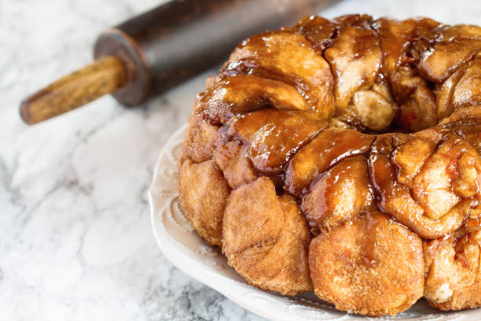
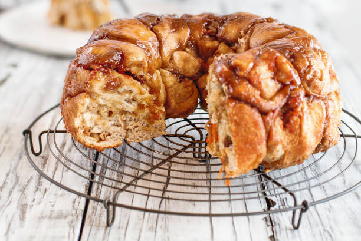
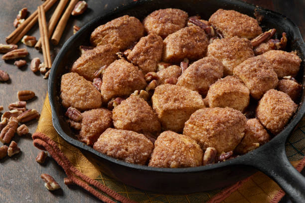

.
.
.
.
Preheat oven to 400 degrees F (200 degrees C). Spray 8 muffin cups with cooking spray.
In a bowl, stir together 1 tablespoon of cinnamon and the white sugar until evenly blended. Remove the biscuits from the packages, and cut into quarters. Drop a few biscuit pieces at a time into the sugar mixture, and coat thoroughly. Distribute the coated biscuit pieces among the prepared muffin tins (4 to 5 pieces per cup).
Place butter, brown sugar, and the remaining 1 tablespoon cinnamon in a microwave-safe glass or ceramic bowl, and microwave a few seconds until the butter has melted. Stir to blend, and drizzle about 2 tablespoons of the butter mixture over each cup.
Bake in the preheated oven until the tops of the muffins are crispy and brown, about 20 minutes. Allow to cool for about 10 minutes before removing from pan.
  